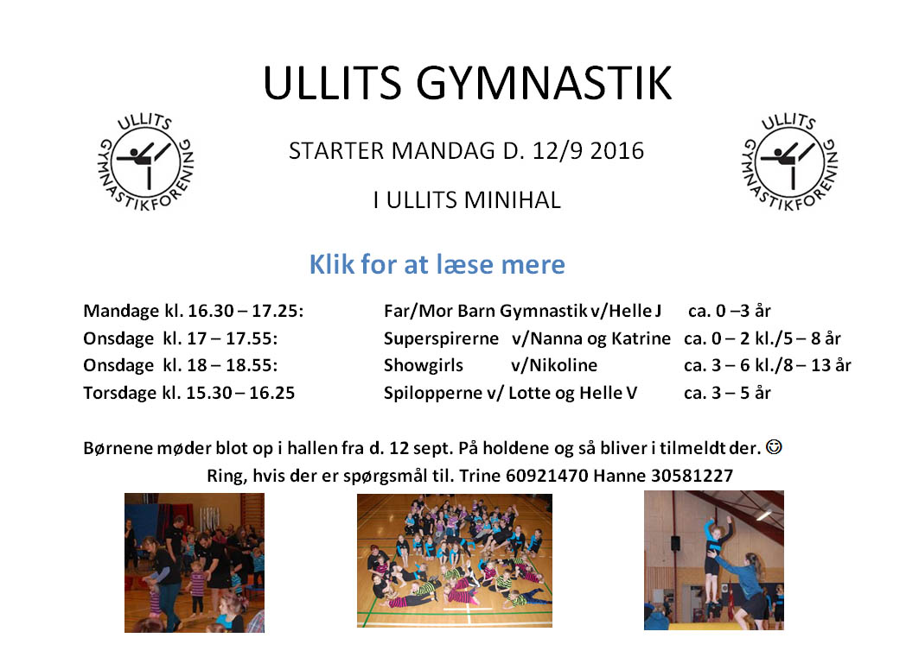
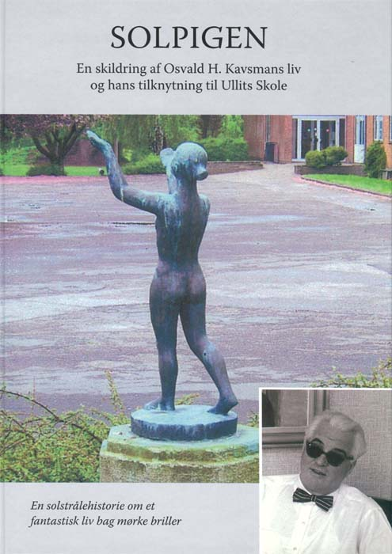
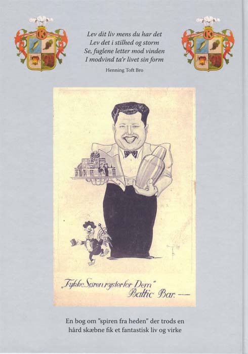

|
 |
digit@le Ullits |
Ullits bog udgivet
Ullits skole og lokalsamfundets fremtidSolpigen, af Søren Byrjalsen
  |
13. aug.
Hej alle.
Vi har besluttet at indbetale depositum til oprettelse af en friskole. Ullits skole er ikke umiddelbart i farezonen, men vi er bekymrede for om vi kan komme det hvis vi ikke indbetaler de 20.000 kr i depositum. Vi risikere jo så at stå som en af de eneste af de små skoler der ikke har indbetalt.
Indsamlingen er gået fantastisk og vi siger mange tak for alle bidrag, både fra forældre, borgere uden børn på skolen og foreninger. Vi vil nu spændt følge de kommende måneders politiske udmeldinger og den endelige beslutning til december.
Mvh arbejdsgruppen for Ullits friskole.
Vi fik 20.756,50 kr samlet sammen
Efter at politikernes planer, der kan betyde lukning for Ullits Skole og Børnehuset, og efter den velbesøgte borgermøde d. 25 juni, har skolebestyrelsen startet kampen for at bevare Ullits Skole. Hvis du har en Facebook profil, kan du deltage i gruppen Bevar Ullits Skole (den er desværre slet ikke synlig uden en Facebook login). Hvis kommunen holder fast i lukningsplanerne er det nødvendigt med at Plan B - en friskole. Det kræver at der indbetales et depositum til Undervisningsministeriet på 20.000 kr. d. 15 august, hvis man skal have mulighed for at starte en friskole et år senere. Beslutningen om en vet. lukning træffes først af politikerne lige før jul. Skolebestyrelsen har derfor lavet en indsamling for at skaffe pengene. Beløbet skal opfattes som en forsikring - forhåbentligt bliver det ikke nødvendigt, og selv det, at en friskole er en mulighed kan måske få kommunen på andre tanker.